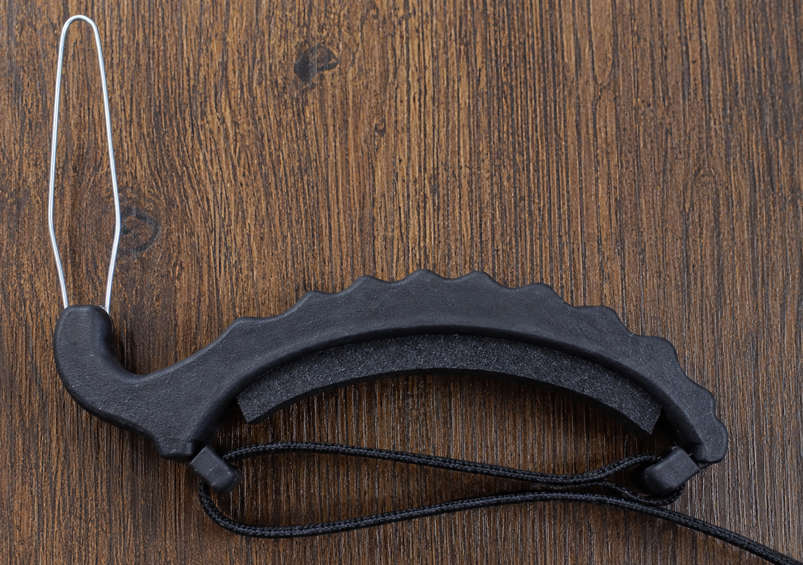
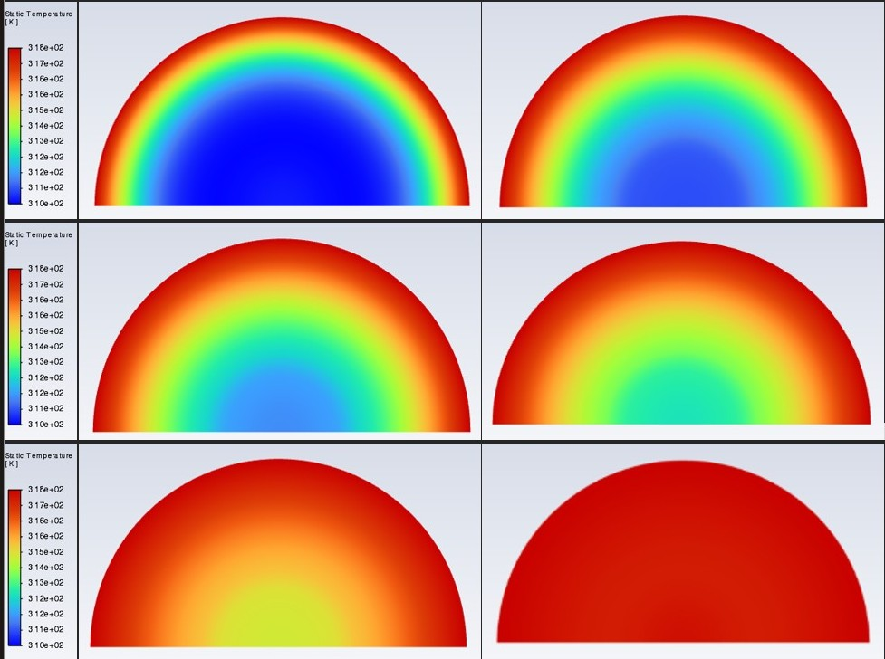
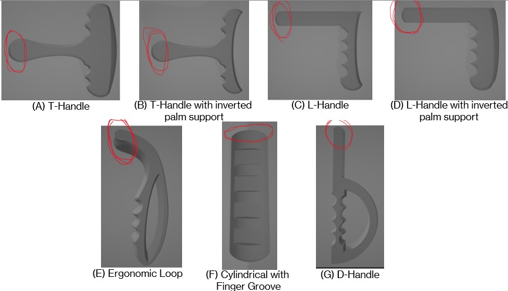
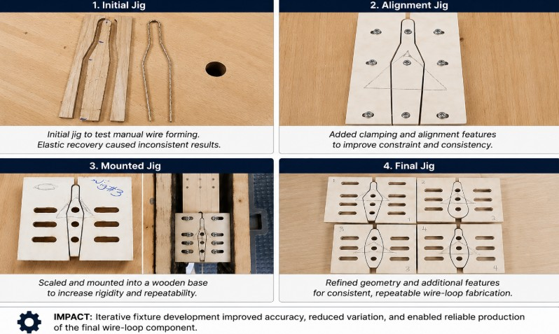
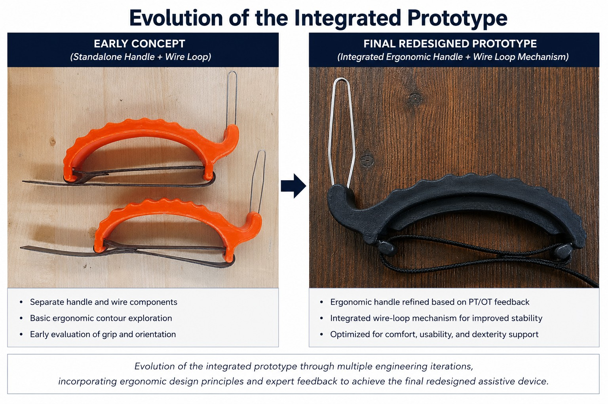
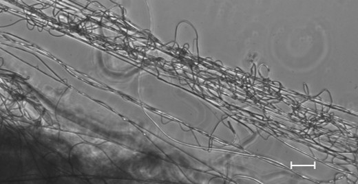
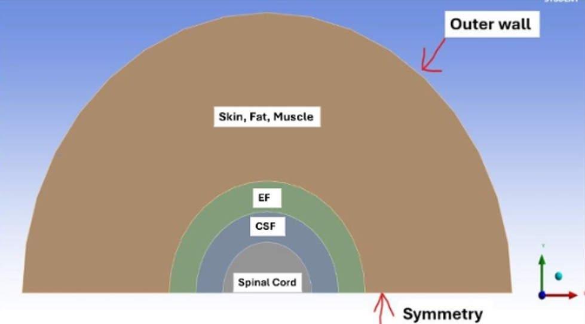
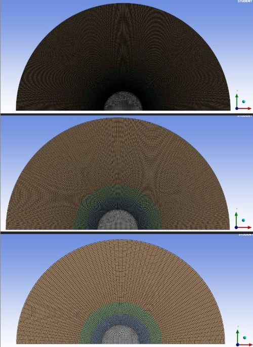
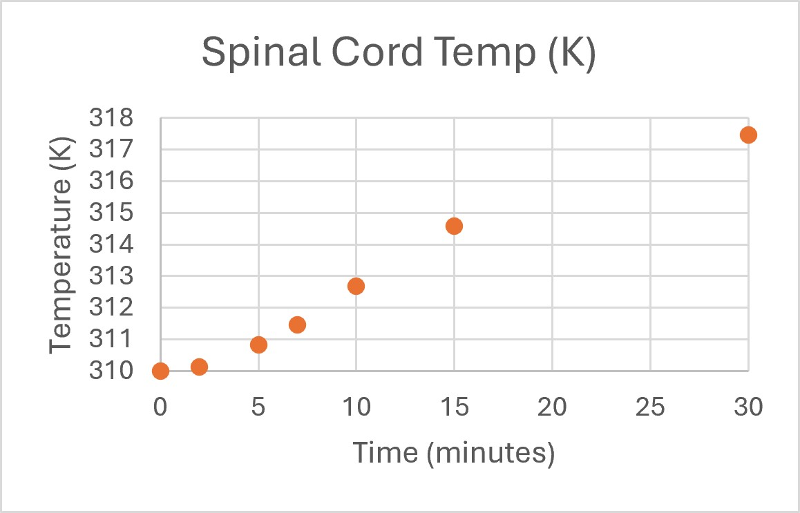

Master's thesis · 2026
Assistive Button Hook Redesign
Human-centered redesign of a daily-living aid for users with reduced hand dexterity.
View case study →Biomedical Engineer · Ph.D. Student
Biomedical engineer developing practical, patient-centered devices through human-centered design, Creo CAD, rapid prototyping, fixture development, usability evaluation, and regulated product-development experience.

About
I am a biomedical engineer and Ph.D. student at Florida Institute of Technology with experience spanning orthopedic product development, assistive-device design, computational modeling, and manufacturing-focused prototyping.
At Globus Medical, I supported orthopedic implant and surgical-instrument programs through Creo modeling, prototyping, DV&V activities, engineering change documentation, and post-market data analysis. My engineering and MBA training help me connect technical decisions with usability, quality, manufacturability, and business needs.
Selected work
Three experiences that best demonstrate my approach to medical-device development, system integration and technical problem-solving.

Master's thesis · 2026
Human-centered redesign of a daily-living aid for users with reduced hand dexterity.
View case study →
Senior design
Low-cost platform engineered to produce aligned and randomly oriented nanofibers.
View case study →
Graduate research
Transient thermal analysis of controlled surface heating through spinal tissues.
View project →Industry experience
Project Engineer Co-op
FEMUR Team
Jan–Aug 2024
Audubon, Pennsylvania
I contributed to orthopedic implant and surgical-instrument programs across design, prototype evaluation, verification support and documentation control.
Project details are presented at a nonconfidential level to respect proprietary product information.
Flagship case study
Needs assessment → concepts → CAD → prototypes → fixtures → preliminary usability evaluation
Conventional button hooks may still require sustained gripping, controlled wrist motion and precise wire-loop positioning. I led a two-aim redesign focused on a more supportive handle and a refined hook mechanism for easier engagement, retention and release.
Requirements development, concept generation, Creo modeling, prototype fabrication, clinician-informed iteration, wire-forming fixture development, device integration, test planning and usability-data analysis.



System design case study
Architecture → CAD → fabrication → subsystem integration → process testing
Design and fabricate a cost-conscious, enclosed electrospinning platform capable of producing both aligned and randomly oriented polymeric nanofibers for tissue-engineering research.
CAD, FDM 3D printing, aluminum and acrylic fabrication, NEMA 17 motion control, mechanical assembly and experimental testing.



Computational project
Multilayer model → transient simulation → mesh independence → thermal response
Could controlled surface heating produce spinal-cord thermal effects relevant to electrical-stimulation-based pain-modulation research?
ANSYS Fluent, transient thermal analysis, bioheat modeling, mesh independence studies, MATLAB and engineering data analysis.
The model predicted an approximately 1.78°C spinal-cord temperature increase after about eight minutes of controlled heating. The result supports further investigation; it does not establish clinical efficacy.



Additional research
Designed and conducted a Bradford-assay study comparing measured protein concentration in traditional and plant-based chicken across five preparation conditions.
Methods: RIPA extraction, serial dilution, BSA calibration, microplate analysis and Excel.
Experience producing functional medical-device and engineering prototypes with a Bambu Lab X1 Carbon, including iteration, fit evaluation and design for additive manufacturing.
Technical capability
Creo Parametric, SOLIDWORKS, sheet-metal design, GD&T, technical drawings, DFM/DFA and concept development.
Human-centered design, usability evaluation, design controls, risk management, DV&V and quality systems.
FDM printing, fixture design, wire forming, CO₂ laser cutting, machining tools, assembly and functional evaluation.
FMEA, CAPA, complaint investigation, DCOs, UDI tracking, documentation control and FDA quality-system exposure.
ANSYS Fluent, thermal and bioheat modeling, mesh independence studies, MATLAB and experimental data analysis.
Advanced Excel, PivotTables, regression, SQL, Tableau, ROS 2, rclpy, URDF and Ignition Gazebo.
Credentials
Risk analysis and hazard mitigation
ISO 13485 and IQ/OQ/PQ
Additional credentials: Lean Six Sigma Green Belt · CAPM-Aligned Project Management Specialization · Google Data Analytics Professional Certificate · Advanced GD&T
Education
Ph.D., Biomedical Engineering
Expected May 2030
M.S., Biomedical Engineering · 2026
MBA, Management · 2026
B.S., Biomedical Engineering · 2026
Minors: Management, Robotics Engineering, Mechanical Engineering and Mathematics
Selected presentation
Human-Centered Redesign of a Button Hook for Individuals with Dexterity Impairments: Development and Preliminary Usability Evaluation
Accepted onsite poster presentation
Orlando, Florida · October 2026
Professional member: BMES · ASME · IEEE EMBS